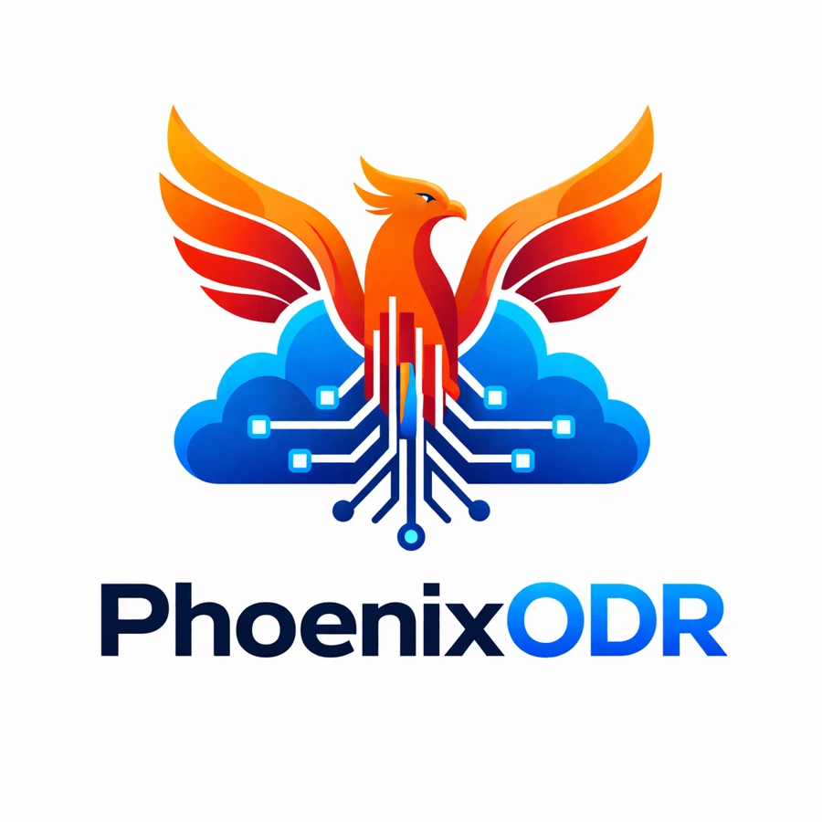

Automated backups
Schedule and manage backups with versioning and appropriate protection.
 Let’s talk ↗
Let’s talk ↗Protect critical data and operations with automated backups, tested recovery procedures and continuity planning.
Review your recovery readiness ↗
Schedule and manage backups with versioning and appropriate protection.
Document recovery priorities, responsibilities and step-by-step procedures.
Plan standby systems and failover processes for critical workloads.
Use verified recovery points and structured restoration workflows.
Plan communication, stakeholder updates and operational workarounds.
Review incidents and tests to strengthen future recovery readiness.
Configure backups, recovery plans and the agreed standby environment.
Identify failures or data issues and trigger response procedures.
Execute tested restoration and failover workflows.
Review the event, document lessons and harden the environment.
↗ Documented roles and recovery procedures
↗ Backups tested before an incident
↗ Recovery priorities aligned with business needs
Recovery time and recovery point objectives depend on your workloads and the agreed solution. They are established during planning.Start with a free 30-minute discovery conversation.